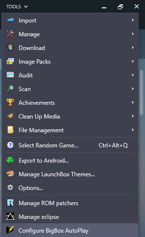
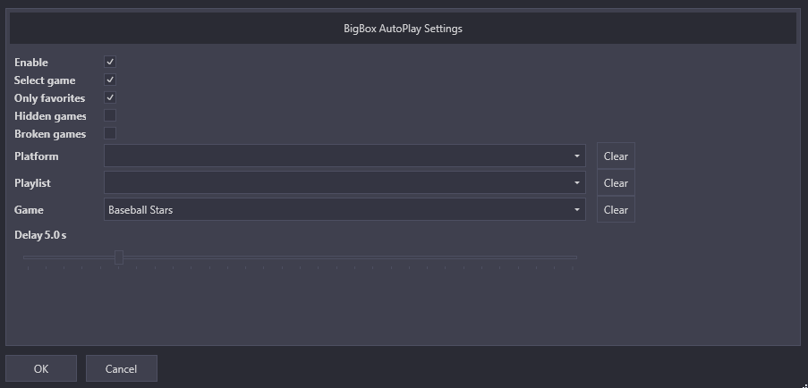

Usage
BigBox AutoPlay can be configured to launch a specific game or a random game. To set up the behavior of the plug-in, open LaunchBox and click Tools > Configure BigBox AutoPlay
 {kind=link}
{kind=link}
Enable
Check the box to enable the plug-in. When enabled, a game will be automatically launched when BigBox starts. Uncheck the box to disable the auto-play plugin.
Select game
Check the box to automatically navigate to the game in BigBox prior to launching it. This allows BigBox to display the marquee for the selected game if a second monitor is active.
Only favorites
Checking the box will limit the random game selection to games marked favorite
Broken games
Checking the box will include games marked broken in the random game selection
Platform
The platform selection is optional. Select a platform to limit the random game selection to games in the selected platform
Playlist
The playlist selection is optional. Select a playlist to limit the random game selection to games in the selected playlist
Game
The game selection is optional. Select a specific game to auto-play. This list is filtered based on the selected platform and/or playlist.
Delay
Specify the number of seconds to delay before launching the game. When a startup video is used with BigBox, this delay allows BigBox to become fully initialized before the game launches, avoiding the auto-played game from launching in a window behind BigBox.